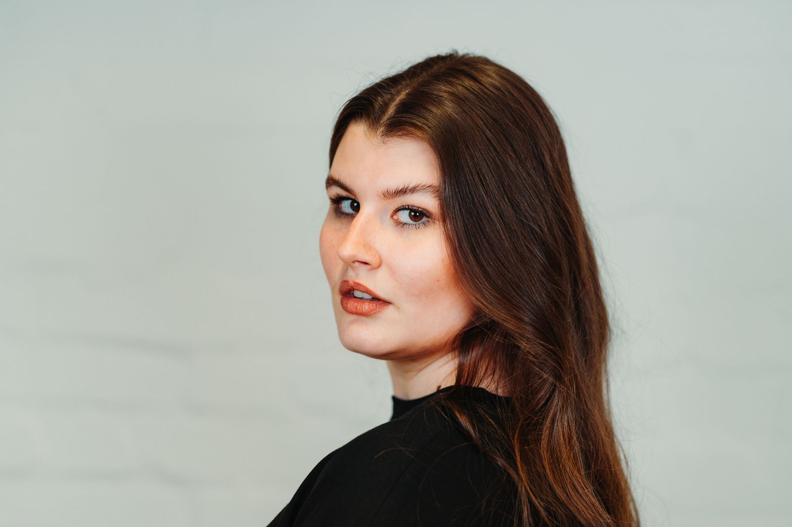
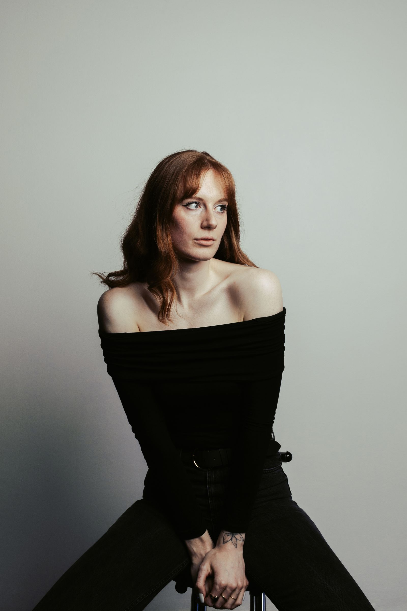

Find the light
Soft window light creates gentle transitions across the face. A more directional studio setup brings shape and definition. We choose the approach to suit the portrait.
A portrait studio drawn to natural gestures, generous light and the connections we carry.

We start with a conversation about how you want to be photographed. A simple setup keeps the focus on your face, your movement and the people beside you.
During the session we guide position and posture, then allow time for the unplanned frames. You can choose your favorite photographs from the proofs.
View the galleryPosing starts with something simple. Turn toward the light, find a comfortable place for your hands, and let your expression settle.

Soft window light creates gentle transitions across the face. A more directional studio setup brings shape and definition. We choose the approach to suit the portrait.
Small changes in shoulder position, eye line and distance from the background can change a frame. We guide each adjustment, leaving time to get comfortable.
Use the proof gallery to compare expressions and mark the frames you connect with. Those choices guide the final edit and any print selections.
Some portraits feel open and spontaneous. Others are still and considered. Our approach makes space for both, with a consistent attention to skin tone, detail and the person in front of the camera.

Bring clothes you can sit and move in comfortably. For group sessions, choose tones that work together. Tell us about any access needs, breaks or pairings you would like us to plan for.